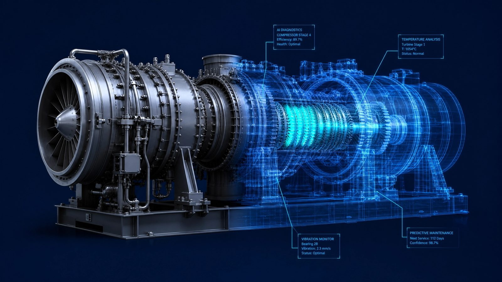

Инженерное моделирование с применением ИИ
Направление, в котором расчётные методики команды соединены с инструментами машинного обучения. Задача: сократить сроки расчётных работ и выпуска документации без потери качества. Модель предлагает, инженер проверяет и подписывает.

Что делает Ротодин ЛАБ
Расчётные отчёты
Газодинамика, 3D CFD, тепловое состояние, прочность и ресурс. В каждом отчёте методика, исходные данные, допущения и границы применимости.
Сравнение платформ
Параметрический подбор машины под задачу: КПД на реальных режимах, ресурс, стоимость топлива и владения, сроки поставки.
Автоматизация расчётных цепочек
Объединение одномерного расчёта, 3D-моделирования и прочностного расчёта в единую расчётную цепочку с автоматическим пересчётом при изменении исходных данных.
Автоматизация выпуска КД
Шаблоны, проверка комплектности и согласованности документов, формирование спецификаций.
Цифровой двойник
Модель машины, настроенная по её эксплуатационным данным. Помогает раньше заметить отклонения, оценить оставшийся ресурс и планировать ремонт по состоянию.
Обработка данных мониторинга
Анализ трендов параметров для сервисных компаний и эксплуатирующих организаций, подготовка решений о ремонте.
За вывод отвечает инженер
Инструменты ИИ ускоряют рутинные шаги: подготовку расчётных моделей, перебор вариантов, проверку документов. Методика, допущения и итоговые выводы остаются за специалистами, которые проектировали и испытывали газовые турбины.

Расскажите о задаче
Первая консультация бесплатна: один-два звонка, чтобы уточнить задачу и исходные ограничения. Затем направляем техническое предложение с объёмом работ, сроками и стоимостью.